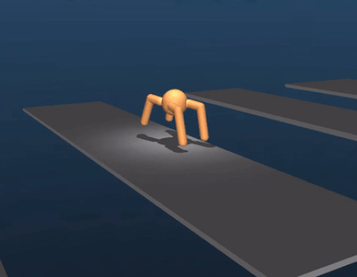
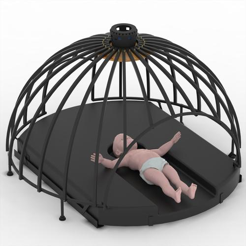

Hello! I am Vatsal Kanakiya, a computer science student at K. J. Somaiya College of Engineering, Mumbai. I am naturally curious and an auto didact. I believe true magic happens at the confluence of multiple fields. I am looking for opportunities to expand my knowledge, contribute to varied fields, and make a difference. Here's my Complete Resume.
"... medicine, law, business, engineering, these are noble pursuits and necessary to sustain life. But poetry, beauty, romance, love, these are what we stay alive for."
Robin Williams, Dead Poets Society
Apart from my academic side, I'm a huge literature, music and movie buff. On the big screen, I love the works of Woody Allen, Quentin Tarantino, Cristopher Nolan and Wes Anderson. I particularly love the works of Wes Anderson, not least due to the color and symmetry in his work. In literature I have a long list of fiction and non fiction writers I adore. One I must mention here is Douglas Adams for his philosophical satire "The HitchHiker's Guide to the galaxy." I aspire to write poems as raw as Robert Frost's. Lastly, in the music department, I wonder at the genius that is in the artists Pink Floyd, Radiohead, Nirvana, Steven Wilson, A. R. Rahman, Miles Davis, Dave Brubeck, Chopin and Debussy to name a few.
Automated Gait Generation for Simulated Machines |
|
|---|---|
|  |
Final Year Project created with Dipen Ved and Abhishek Ananthakrishnan. In this project, we research and propose various algorithms and methodologies to generate a gait for machines using only internal inputs and sensors. The project is currently ongoing. |
Pediatric Perimeter |
|
|  |
Pediatric Perimeter is the first device of its kind. It's a device to measure the visual fields of infants and detect ailments like Glaucoma at an early stage. The project was worked upon at the Srujana Center for Innovation in L. V. Prasad Eye Hospital, Hyderabad in collaboration with MIT Media Labs. |
As a Summer Technology Analyst at Morgan Stanley I got to work on a C# application to view, update, delete, filter, sort, and group financial data. I implemented a unique solution to store to and retrieve hierarchical data from a relational database in a paginated fashion.
At the Srujana Center for Innovation, I was tasked with improving, optimising and calibrating the hardware and software of the Pediaric Perimeter. I was also a mentor at the Engineering the Eye Hackathon where my team and I worked on implementing various Machine Learning and Image Processing Algorithms for Gaze Tracking.
Email:
vatsalkanakiya@gmail.com
|
vatsal.kanakiya@somaiya.edu
Phone: +91 982-137-2343